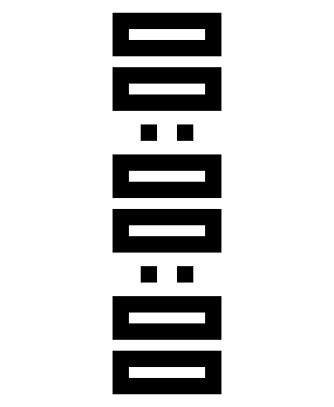

apps that travel between tiny computers.
Every app below is running for real, compiled to WebAssembly, in the browser: not a recording, not a mockup. puck is a device-agnostic emulator, a set of self-contained device packs, and a set of portable app bundles; this page proves the porting story with the real thing.

A full-screen stopwatch: six seven-segment digits, two buttons, nothing else on screen.
A particle liquid that sloshes and settles inside the device's own enclosure shape.
Each cell is a real build of that app's own port, for that device pack's real firmware, verified by the shared harness and running live below.
| RP2350-Touch-AMOLED-1.8 | ESP32-S3-Touch-AMOLED-1.8 | |
|---|---|---|
| chrono | faithful portpixel-exact | faithful portpixel-exact |
| fluidbox | adaptationinvariants (degraded) | not ported |
A self-contained folder for one hardware target: real drivers, a real board's firmware, and a device.json descriptor the emulator reads at runtime. Nothing in the shared instrument names one device; every panel size and button comes from the pack itself.
An app is defined by its descriptor and traces, not by one implementation's source code: what appears on screen, every interaction, and separate requirements from preferences. A port starts with a verdict against the target pack, stated plainly, before any code is written.
app-bundle.mdA faithful port replays its traces and compares frames pixel for pixel. An adaptation states behavioral invariants instead, and gets checked against those. Either way, the same shared harness decides, not a claim in a README.
harness.md